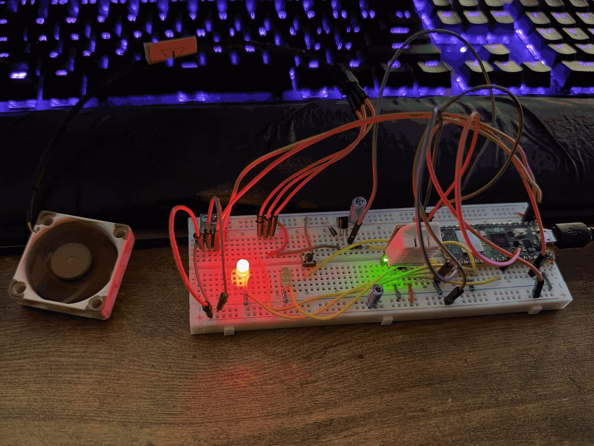
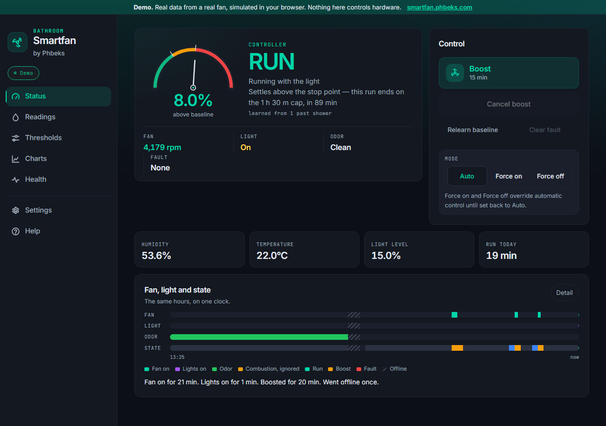
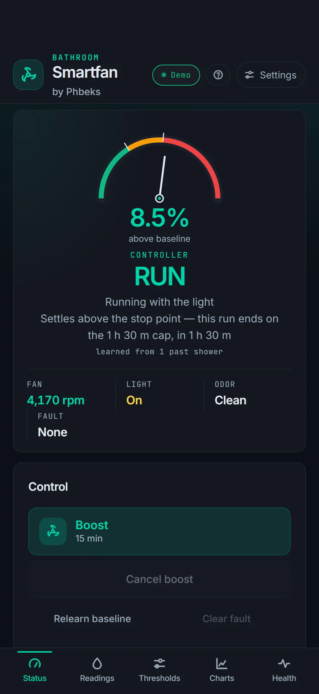
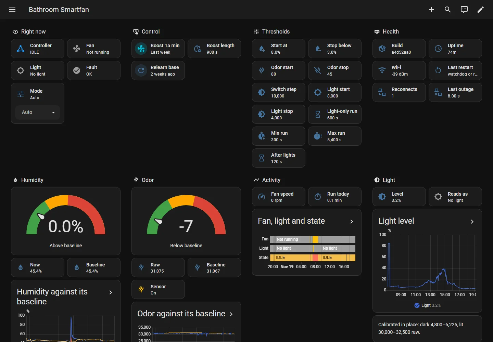
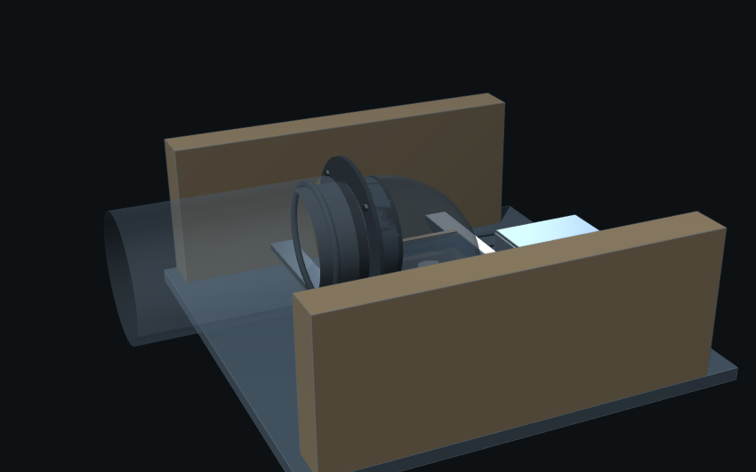

A bathroom fan that knows when to run.
Smartfan switches your extractor fan on for light, humidity and odor, runs it until the room is actually dry, and then stops. It works on its own, with its own app, or as part of Home Assistant.

What it does
Fixed thresholds don't work in a bathroom. A muggy day sits at 65 % humidity on its own, and sunlight can be brighter than the ceiling lamp. So Smartfan learns what normal looks like in your room and reacts to changes from it.
Light means someone's in
It watches for the sharp step of a lamp switching on, so daylight never starts the fan.
Humidity decides how long
It runs until humidity is back near the room's learned baseline, not for a fixed time.
Odor catches the rest
A gas sensor learns what your room normally smells like, corrects for humidity, and runs the fan when that changes, even after the light is off. Then it stops.
Its own app, no cloud
The fan serves its app from its own flash at fan.local, with a week of history. No account.
Home Assistant ready
Install the integration through HACS, or use MQTT. Every reading becomes an entity.
Signed updates over the air
Only your build machine can update it, and a bad update rolls itself back.
A few commercial fans sense odor too. None we found say how theirs decides when to start or stop. Smartfan's logic is written down and in the code.
Try the app
This is the real app, the same one the fan serves. It starts from four days of real data from a real bathroom, and simulates a fan in your browser from there.
- Watch a simulated shower start the fan every few minutes
- Press Boost, change the mode, adjust thresholds
- Browse the charts for humidity, light and odor
Nothing in the demo controls hardware.


Right at home in Home Assistant
Add the integration from HACS and the fan shows up with every reading, threshold and control as an entity. This is the dashboard it ships with, on a live fan.

The next board, in 3D
V2 moves the fan into the ceiling: a 120 mm fan cartridge, a duct collar and a filter, all 3D printed. Drag to orbit and scroll to zoom. V2 is designed but not built yet.

About 600 kB. Or open the assembly or the printed-parts viewer full screen.
Build your own
V1 is a Pico 2 W, a humidity sensor, a light sensor, an odor sensor and a 5 V fan. It runs on USB power with no mains anywhere.
Open source
Firmware, app, Home Assistant integration, board files and printed parts, all in one repository. Issues and pull requests are welcome.